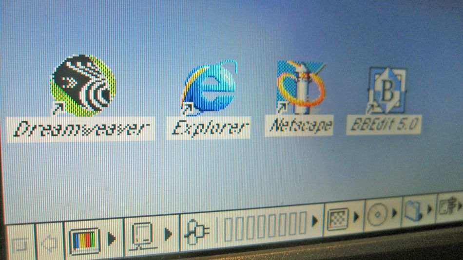

📖 Web 1.0 — The Read-Only Web (1991-2004)

Web 1.0 was the first version of the World Wide Web. People often call it the "Read-Only Web" because users could only read information — they couldn't interact, comment, post, or contribute. It was like a giant digital library or a collection of online brochures.
✏️ My simple way to think about it: Web 1.0 was like reading a newspaper. You could look at articles, but you couldn't write back, leave comments, or share your own stories. The people who owned the website were the only ones who could add or change anything.
🔑 Key Characteristics of Web 1.0
- Read-only — users could only view content, not create it
- Static pages — once a page was published, it didn't change until the webmaster edited the code
- No user interaction — no comments, likes, shares, or reviews
- Information-centric — websites were like digital versions of books or pamphlets
- Owners controlled everything — only webmasters could post or update content
- Slow and basic — dial-up internet, few images, no videos
📅 Timeline of Web 1.0
1989: Tim Berners-Lee proposes the Web
1991: First website goes live
1993: Mosaic browser released
1995: Internet Explorer launched
1998: Google founded
2004: Web 2.0 starts
📋 Examples of Web 1.0 Sites
- Yahoo! Directory — a list of websites organized by category
- GeoCities — people could make simple static pages (but no interaction)
- Britannica Online — the encyclopedia moved online, but you couldn't edit it
- Early news websites — CNN, BBC published articles with no comments section
- Basic company brochure sites — "About Us," "Contact," "Products" — that's it
💡 Fun fact: The very first website is still online today! You can visit it at info.cern.ch. It's just plain text with blue links — no images, no colors, no layout. It looks super basic now, but in 1991 it was revolutionary.
⚙️ Technologies Used in Web 1.0
- HTML — basic (no CSS, no HTML5)
- HTTP — simple request-response
- URLs — addressing system
- GIFs — animated "Under Construction" banners
- Guestbooks — the only way to leave feedback (very basic)
- Counters — showed how many people visited the page
🖼️ What Web 1.0 Looked Like
- Blue underlined links (still standard)
- Gray or white backgrounds
- Tables for layout (no CSS grids or flexbox)
- Pixelated GIFs and "Under Construction" signs
- Times New Roman font everywhere
- Took 30+ seconds to load a single page on dial-up
💭 What I think: I was born after Web 1.0, so I never experienced it. But when I see screenshots, it looks so simple compared to today. Still, Web 1.0 laid the foundation. Without those basic static pages, we wouldn't have YouTube, Instagram, or any of the interactive web we take for granted today.
← Back to all terms